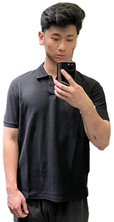

SCOTT LEE

SUMMARY
Undergraduate Computer Science student with proficiency in Java and C++,
testing and debugging, and fundamental programming concepts.
Determined problem solver who excels in both team and individual settings.
Looking for a role to gain experience in software engineering.
SKILLS
Languages: Java, C++, Python
Tools: Visual Studio Code, Eclipse, NetBeans, Github, Android Studio, Flutter
EDUCATION
California State Polytechnic University, Pomona
August 2019 - December 2023 | Bachelor of Science in Computer Science
Honors: Dean's List 2020-2022 | Presiden'ts List 2021-2022 | GPA: 3.65/4.0
Relevant Coursework: Software Engineering, Mobile Application Development,
Data Structures and Advanced Programming, Object Oriented Design and Programming,
Design and Analysis of Algorithms, User Interface Design and Programming,
Discrete Math, Operating Systems
COURSE PROJECTS
MiniTwitter | November 2022
https://github.com/scotttlee/CS3560Assignment2
- Programmed a small scale copy of the popular application Twitter, using Java
- Applied OOP practices and 4 design patterns to simplify code readability and reduce development time
Graphical User Interface Game | September 2022 - October 2022
https://github.com/CS2450-Group/Project1
- Cooperated in a team of 4 to program a Java interactive graphical user interface using Swing
- Support functionality for 4 simple games across multiple frames by implementing Java Classes
WORK EXPERIENCE
Assistant Manager/Barista - ABC Company
CA | August 2021 - August 2022
- Supervised and cooperated with a team of 8 employees to provide attentive service to an upwards of 60 customers per shift, improving work efficiency and boosted store operations
- Trained 12 employees necessary skills to succeed in a fast-paced working environment
- Effectively communicated with manager on employee assessments and inventory management
- Produced weekly schedules through proactive communication with 8 team members, ensuring sufficient staffing for customer volumes
Tutor - XYZ Company
CA | August 2019 - June 2020
- Collaborated with 8 employees to instruct up to 16 K-12 students per shift and formulated individual math assessments for each session
- Achieved 100% positive feedback from students and parents, and elevated student performance by up to 2 letter grades by teaching more efficient approaches to solve complex problems